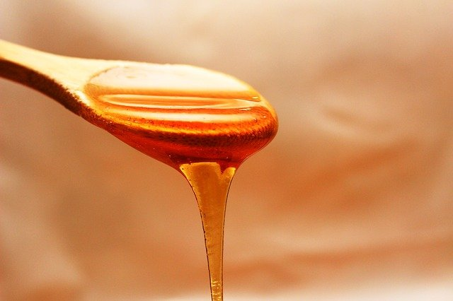

GERÇEK VE SAHTE BAL NASIL AYIRT EDİLİR?

bu yazımızda gerçek ve sahte bal nasıl ayırt edilir bunu anlatıyoruz...
Arıların bizim için en büyük faydalarından birisi bal'dır.Bal,herkes tarafından oldukça sevilen,
faydalı,hastalıklara iyi gelen yiyecektir.Günümüzde sahte bal üretimi oldukça yaygın.Bu sahte
ballar doğal mineralleri yok ediyor ve faydasından çok zararı oluyor.Durum böyle olunca bal'ın
gerçek mi yoksa sahte mi olduğunu iyi ayırt etmemiz gerekiyor.
Gerçek bal nedir?
Gerçek bal,saf,hakiki ve direkt olarak arıdan gelen baldır.Yani bal'a sonradan hiçbir ekleme
yapılmamıştır.
Gerçek balın özellikleri
Sahte bal nedir?
Sahte bal ise üzerinde oynanmış baldır.İçinde glukoz,dekstroz,şeker şurubu gibi yapay maddeler yer
alır.

Gerçek ve sahte balı nasıl ayırt edebilirim?
Baş parmak testi
Baş parmak testi balın gerçek mi yoksa sahte mi olduğunu ortaya çıkarır.Sahte bal parmakta sıvı gibi
damlar ve akışkandır.Ancak orjinal bal oldukça yoğun ve yavaştır.Balınız parmağınızdan hızlıca akıyor
ise bu bal sahte,yavaş akıyor ise orijinaldir.
Suya koyma testi
Bu yöntem benim de uyguladığım bir yöntemdir.Bir tabağa birazcık su koyun,sonrasında suyun üzerine
birazcık bal ekleyin.Hiç karıştırmadan yavaşça tabağı sallayın.Birkaç dakika sonra balın üzerinde
petek şekli gözükmesi gerekecek.Petek şekli gözükür ise orijinal,gözükmez ise sahte baldır.
Ateş testi
Gerçek bal yanıcıdır.Elinize bir kibrit alıp yakın ve bala dokundurun.Bal yanarsa orijinal yanmaz
ise tamamen orijinal değildir.
Yumurta sarısı testi
Sadece yumurtanın sarısını bal ile karıştırıyoruz.Karışınca yumurta sarısı aynı pişmiş bir şekil
alıyorsa bu bal gerçektir,almıyorsa sahtedir.
Sirkeyle karıştırma
Sirkeli suyun üzerine birazcık bal ekleyin ve karıştırın.Karışım eğer köpürür ve değişik bir hal
alırsa sahte,aynı özellikte kalırsa gerçektir.